成果
郑国东周祭祀遗址编钟是春秋中期的青铜乐器，这一批编钟为二十件钮钟和四件镈钟的编列组合，各组形制及钟悬规则基本一致、铸造规范。为提升郑国编钟展示效果，增加体验交互性，团队对河南博物院郑国编钟进行了扫描重建，配合编钟现场演奏的配音，形成郑国编钟演奏交互系统，这对于沉浸式体验春秋郑国编钟的音乐性能，增加历史文化趣味性具有重要意义。

为保证郑国编钟细节的真实质感，团队设计了系统的模型重建流程：通过结构光三维扫描设备，获取郑国编钟的局部点云数据，采用快速点特征直方图并迭代最近邻点的方法，将全局点云配准，运用go surf表面重建算法将编钟表面重建，通过回溯双向波前法填充空洞，获得封闭的模型。基于隐函数的纹理重建网络，从彩色图片中恢复模型纹理，进一步提高郑国编钟模型的还原度、真实感。

由于编钟存在尺寸过大、漆面反光的问题，团队采用分段扫描拼接、棱面分别贴上美纹纸及棋盘格等标志物，优先保证几何重建。


此外，为实现郑国编钟的沉浸式体验效果，团队使用em32高阶话筒进行立体声声音录制，对不同编钟不同力度各录制3遍 由专业演奏老师进行编钟敲击，达到还原真实演奏。

该系统基于南京大学南京大学EE VirtualStar数字人交互试验平台，通过动作捕捉和面部表情捕捉棚对人脸/人体进行高精度的三维采集，运用4D人脸建模和映射系统快速生成数字人形象，结合VR手柄、传统键鼠、语音设备，实现语音、眼动、肢体等多模态交互。

团队设计了宇航员和火星车在火星探索的场景，包含火星表面环境的基本场景信息，火星车自主行驶、宇航员火星行走探险等场景，十分生动。

弱监督物体检测任务（WSOD）旨在仅利用图像级别的类别标签来训练一个检测器。近年来，一些弱监督检测方法试图从原始的WSOD模型中挑选高质量的伪标注来提升模型性能。然而，这些方法仅仅根据图片及的线索，将带有伪标注的训练集数据集划分为有标签集和无标签集，而忽略了每一个检测框的分类信息和定位信息，因此信息没有得到充分利用。在本工作中，本文提出将弱监督信号转化为带噪监督信号的目标检测算法（W2N），该算法包含两个迭代训练的子模块。本文的算法充分考虑了每一个检测框具有的信息，并提出了一个正则化损失来缓解WSOD会集中注意到"discriminative part"的问题。实验结果显示，本文的方法在PASCAL VOC, COCO等数据集上都达到了SOTA。图1为不同WSOD方法的训练范式。
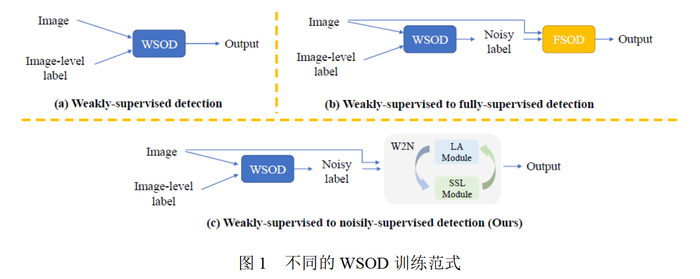
本文的主要贡献如下：
（1）本文提出了一种新的多阶段WSOD范式，它将多阶段弱监督物体检测问题建模为噪声标签物体检测问题求解，以减少低质量的伪标签对模型的负面影响。
（2）为了解决带噪声标签物体检测的训练问题，本文提出了一个迭代学习框架，包括定位适应模块和半监督学习模块，从而提高了伪标签的质量并提升了检测器的性能。
（3）本文在不同基准数据集上验证了本文的方法的有效性。实验结果表明，本文的方法可以有效提升各个单阶段WSOD模型的性能，并在WSOD任务上达到了到SOTA。
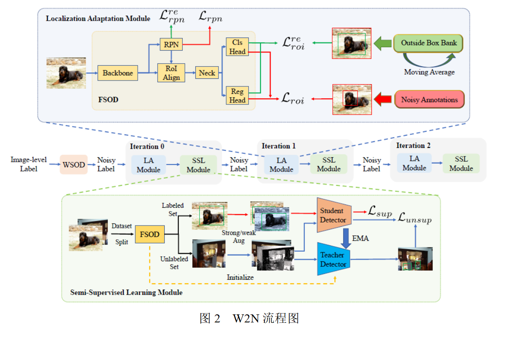
首先在弱监督数据集上训练一个基础的弱监督检测网络。 接着利用训练好的弱监督检测网络，对训练集标伪标签。本文称这个带伪标签的训练集为“带噪声标注的数据集”。为了在这样的噪声数据集上训练物体检测器，本文提出了一个新的训练框架W2N，它循环迭代执行定位适应模块和半监督学习模块，以产生更加准确的伪标签，并利用更新后的伪标签监督训练一个更好的物体检测器。整体训练流程如图2所示。
首先在弱监督数据集上训练一个基础的弱监督检测网络。 用该检测网络在训练集上预测检测框，并将输出的分类分数低于给定阈值的检测框删除，剩下的检测框作为初始的伪标签。在本文中，分别采用OICR+REG，CASD和LBBA作为基础的弱监督检测网络。
本文提出了一个训练框架W2N，它在定位适应模块和半监督学习模块之间反复进行迭代。以下各小节将详细说明这两个模块。
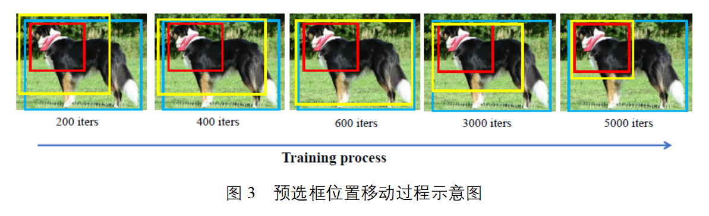
对于位于discriminative part的伪监督框，在训练时，在其外侧生成一个预选框，考察该预选框位置的变化。本文发现，在训练的初始阶段，该预选框首先会往物体所在的位置移动；然而随着训练的进行，预选框最终会靠近该内部的伪监督框，如图3所示。本文利用这个现象，将该预选框中间回归的结果保存，作为额外的监督信息，计算正则化loss训练网络模型。
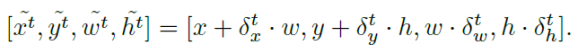
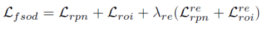
在该模块中，本文设计了一个混合级数据集划分方法以及一个基于伪标签的半监督训练算法。
在SoS中，数据集划分以图片作为最小单元。本文认为，由于图片中往往存在多个物体和多个伪监督框，因此以伪监督框本身为划分单元更能充分利用高质量的伪监督、忽略低质量的伪监督，因此提出了实例级划分方法。
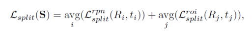
在该方法中，根据每个伪监督框上累计的loss的大小，将loss较低的伪监督框保留，剩余的部分删去。
本文发现存在部分伪监督框的分类信息准确，但定位信息不准；相似的，存在部分伪监督框定位信息准确，但分类信息不准。为了更加充分利用每个伪监督框准确的信息，本文进一步提出双任务实例级划分方法。具体而言，对于每个伪监督框，分别计算其分类loss和回归loss，分别按照其对应任务的loss的值对其划分。对于分类信息准确而定位信息不准的伪监督，在后续的半监督检测流程时，只用其训练分类；反之，只利用其训练回归。
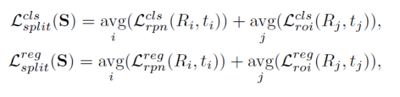
本文采用unbiased teacher作为半监督物体检测框架。将上述数据集划分得到的clean set作为labeled set，noisy set作为unlabeled set，执行半监督检测流程。
本文分别以OICR+REG，CASD和LBBA作为基础的弱监督检测模型来搭建提出的W2N训练方法，以下是在PASCAL VOC 2007上的实验结果
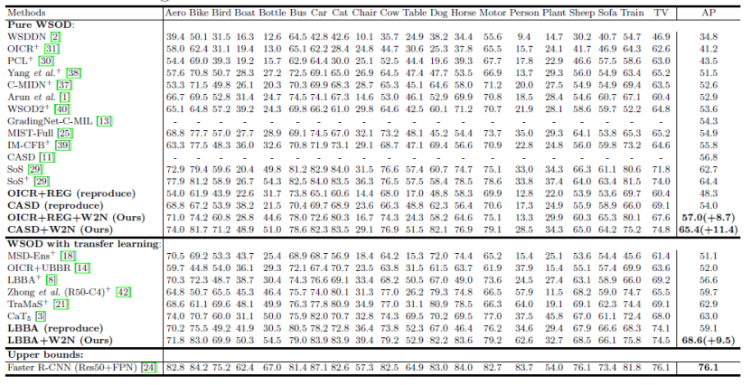
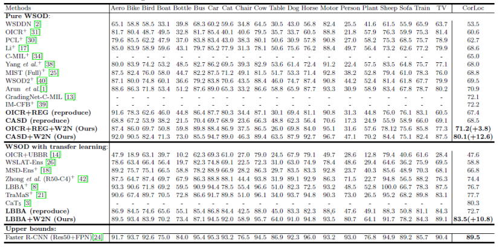
实验结果表明，本文提出的W2N训练方式可以有效提升基础弱监督检测网络的性能，性能越了其他WSOD方法。
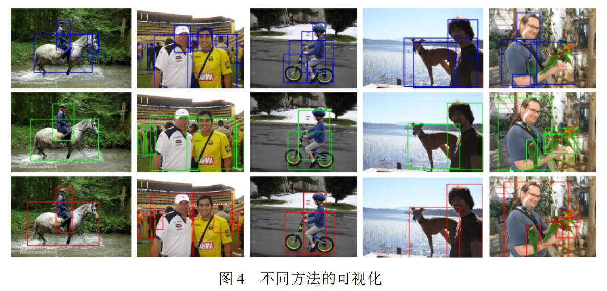
图4中，第一行为LBBA的可视化结果，第二行为LBBA+W2N的可视化结果，第三行为真实的标注框。
下表展示了本文提出的不同模块对性能的影响
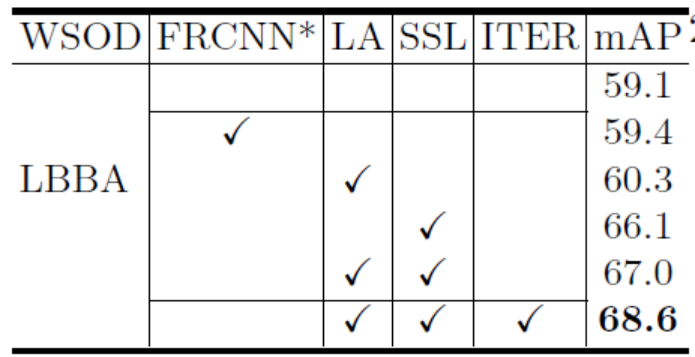
下表展示了迭代次数对模型性能的影响
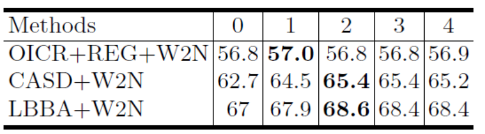
单样本生成式域迁移旨在，在只使用一个参考图像的条件下，在只使用一个参考图像的条件下。然而，对于迁移后的生成器来说， (i) 生成类似于预训练生成器内容丰富的图像，同时 (ii) 忠实地获取目标域的参考图像的属性和样式。在本文中，我们介绍了一种新的单样本生成式域迁移方法，即 DiFa，用于多样的生成和准确的迁移。对于全局水平的迁移，我们利用差异参考图像的 CLIP 编码与源图像来约束目标生成器。对于局部适应，我们引入基于注意力机制的风格损失，它自适应的每个迁移图像块及其对应的参考图像块。为了更好的多样化生成，我么引入选择性跨域一致性来保持编辑隐空间中的域共享属性继承多样性预训练的生成器。大量实验表明我们的方法在量化和可视化上均达到了最优，特别是对于域间差距较大的庆幸。此外，我们的 DiFa 可以轻松扩展到零样本生成式域迁移任务中。
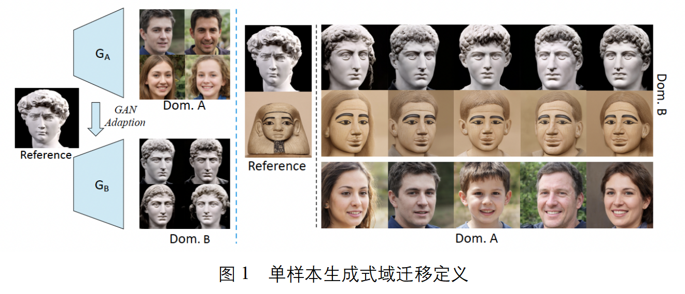
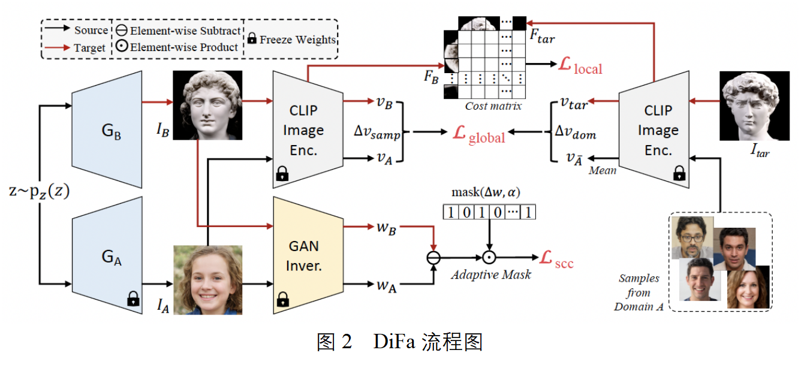
给定在源域A上预训练的生成器GA，以及来自目标域B的引导图Itar，首先使用CLIP编码器计算域间向量：
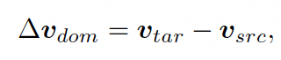
然后计算训练过程中样本间的偏移向量及全局损失函数
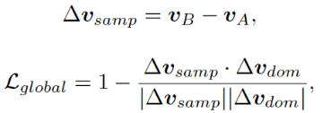
尽管域间向量可以捕获引导图中的全局水平的域代表性特征，而在CLIP编码空间中，局部属性和风格却经常被忽略。因此，只使用全局水平损失函数训练不能准确获取引导图中的局部信息。为了解决这个问题，我们提出了基于注意力机制的风格损失函数来帮助GB准确获取局部代表性特征。受风格迁移任务重风格-内容对齐的启发，我们设计局部损失函数，让迁移图中的每一块都能自适应的寻找并对齐引导图中的对应风格，损失函数如下所示：
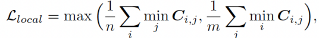
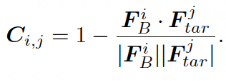
对于单样本生成式域迁移任务来说，生成多样的图片也十分重要。为了达到这个目的，我们首先把IA和IB均映射到隐空间，获取对应的隐编码。并在训练的过程中维持两个队列，分别存放来自域A和B的隐编码，并实时更新两个队列平均向量之差。根据这个差，计算自适应跨域一致性损失函数：
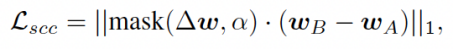
图3是本文提出的DiFa在源域为FFHQ和AFHQ-Cat，在目标域为不同引导图的可视化结果。表1是DiFa在源域为FFHQ和AFHQ-Cat，目标域为MetFaces和AFHQ-Wild的域迁移结果。从图3和表1可以看出，我们的方法在定量和定性方面均达到了最优。具体来说，Few-Shot Adaption产生了严重模式坍塌现象。StyleGAN-NADA不能准确的保持源域的属性，因此多样性较低。Mind The Gap对于域间差距较大的情况处理较差，有明显的瑕疵。
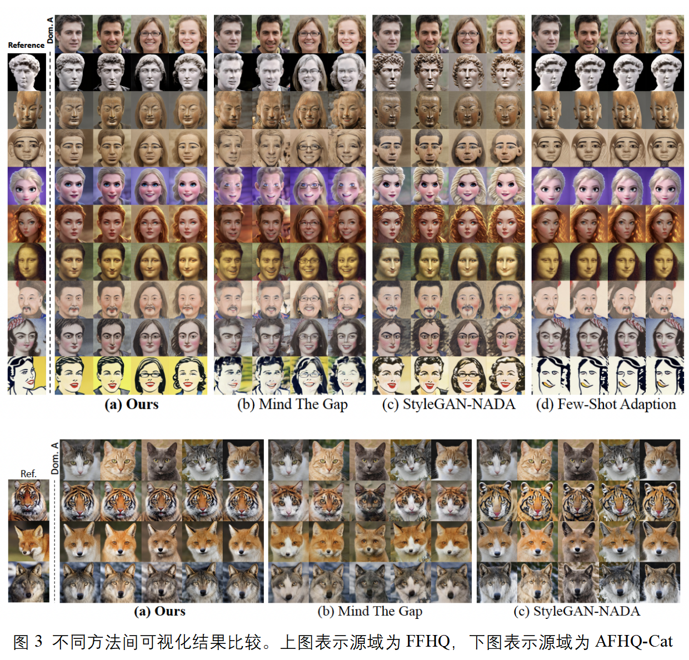
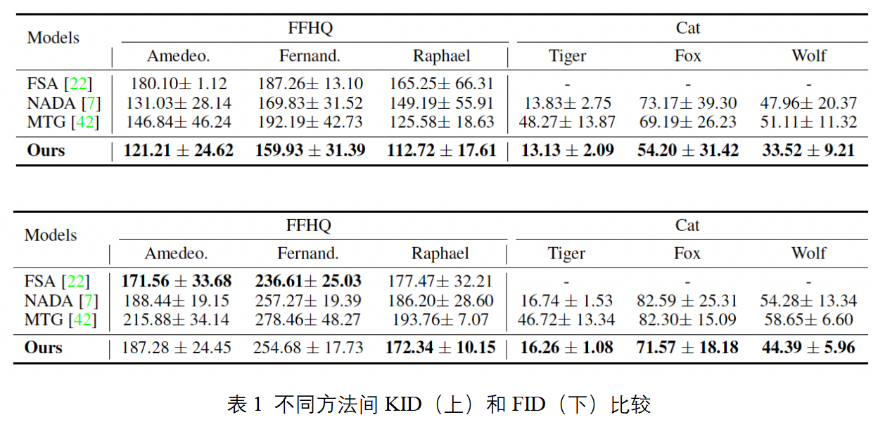
下表是对于两个主要损失函数SCC(Selective Cross-domain Consistency), AP(Attentive Style)的消融实验，能够比较直观地体现每个函数带来的性能提升。
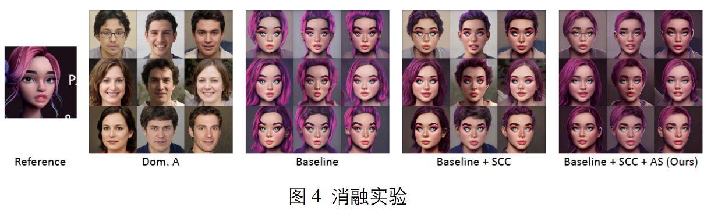
视觉自注意力网络（ViTs）的少样本学习能力值得挖掘，但现阶段很少有相关工作探索这一问题。在本工作中，我们首先通过大量实验发现，基于相同的少样本学习框架，例如Meta-Baseline（ICCV 2021），直接将CNN特征提取器替换成一个ViT特征提取网络会带来严重的性能下降。进而，我们对这一问题进行了充分的分析，发现问题核心在于，由于缺少和CNN一样的归纳偏置，ViT通常会在少样本学习的训练范式下学到一些低质量的邻域区块相关性信息，这一点对于最终的少样本分类精度影响很大。为了解决这一问题，我们针对ViT，提出了一个简单但是有效的少样本分类训练框架Self-promoted sUpervisioN（SUN）。SUN首先在相应的少样本分类数据集上预训练一个ViT，并用其为每一组输入中的所有图像区块生成位置相关的监督信息，用来指导另一个相同结构的ViT的训练，使得新训练的ViT能够识别出相邻的区块是相同类别的还是不同类别的，从而促进邻域区块相关性的学习。引入这种稠密的监督信息能够有效改善ViT在少样本分类上的物体定位与识别能力，从而学到泛化能力更强的特征提取网络。为了进一步提升位置相关的监督信息的质量，我们引入了两个技术：背景过滤模块和空间对齐增广，从而进一步提升ViT在少样本分类上的效果。
本文的贡献如下：
（1） 分析了现有的多种ViT在少样本分类任务下的性能，并指出问题原因：缺少归纳偏置和低质量的邻域区块相关性学习效果。
（2） 为了改善ViT在少样本分类任务下的性能，我们提出了Self-promoted sUpervisioN (SUN)，该方法主要通过引入来自相同数据集上预训练的教师模型输出的稠密标签，通过空间对齐增广和背景过滤模块进行增强，从而使得ViT学到一定程度的归纳偏置，并改善邻域区块相关性学习效果。
（3） 第一个针对多种ViT在少样本分类任务上进行分析并提出优化的解决方案的工作，为后续的少样本分类方法提供了一个简单但是足够可靠的基线方案。
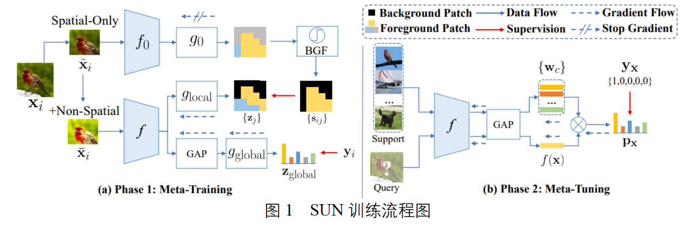
SUN的元训练阶段的目的是在训练集上学到一个特征表达能力较好，泛化性能较强的元学习器 f，使得 f 在开始元微调阶段前即拥有快速适应到新类别上的能力。 SUN的主要设计想法是引入一个来自在训练集上经过预训练的教师模型生成的位置相关稠密监督信息，目的是强化和加速图像区块邻域相关性的学习，从而能够提高在数据缺乏的条件下 ViT 的学习效率。具体来说，基于在训练集上预训练过的一个ViT，SUN首先为输入图像中的每个区块生成分类分数，如下所示。
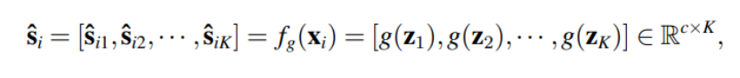
然后根据这个分数通过label smoothing的方法生成稠密的监督信息。该监督信息与原始的图像分类标签一起，用来训练一个结构相同的ViT，损失函数如下所示。
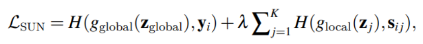
元微调阶段的目的是在训练集采样出的多个 “N-way K-shot” 任务上充分微调预训练好的元学习器 f，使得 f 能快速适配到仅有少数标注的新类别上。因此，不失一般性，我们选择引入多种简单但是有效的元微调策略来验证性能，例如 Meta-Baseline、FEAT 和 DeepEMD。
我们在miniImageNet，tieredImageNet和CIFAR-FS三种不同的少样本分类数据集上与之前的最优方法进行比较。需要注意的是以往的方法都是基于ResNet进行训练。如下表所示，我们的方法在三种不同的数据集上均达到了CNN-based方法的效果，说明SUN确实能够有效改善ViT在少样本分类上的性能。
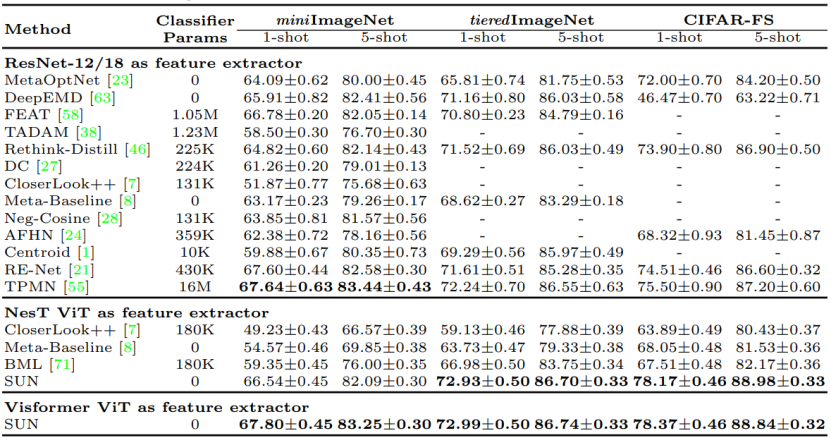
我们对使用与不使用SUN训练的ViT抽取的特征进行了t-SNE可视化。与不使用SUN的ViT相比，使用SUN训练的ViT能够在新类别上抽出聚类效果更好的特征，说明SUN在少样本分类任务上提升了ViT的泛化能力。
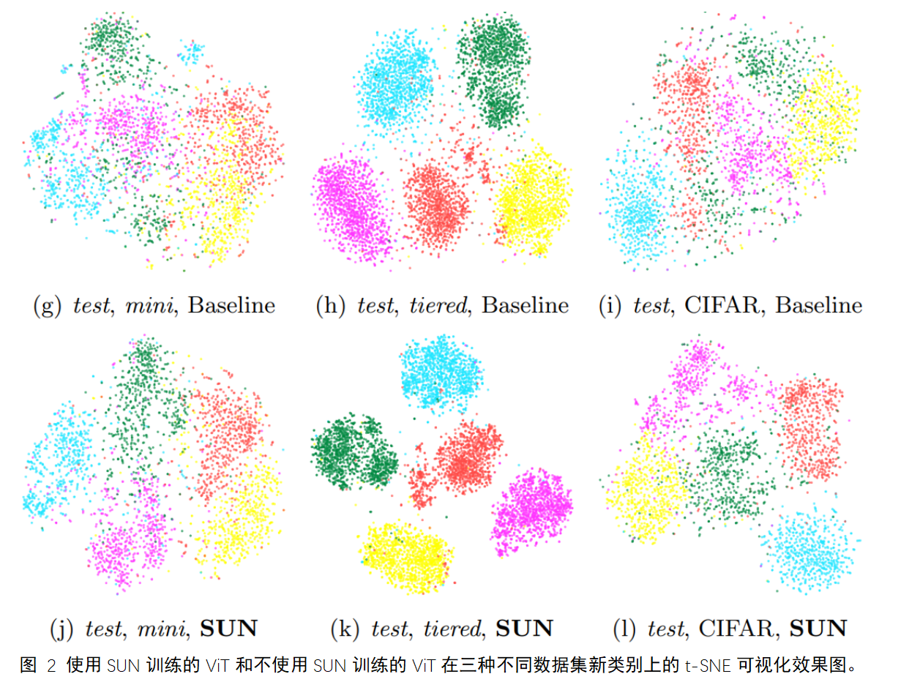
我们针对SUN的几个核心模块进行了消融实验，以上所有模块对ViT的少样本分类都有促进效果。
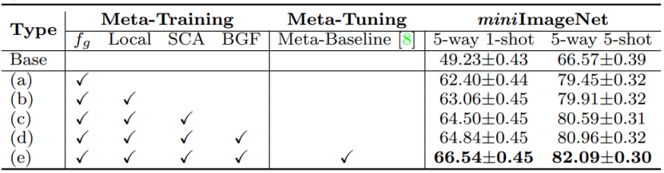
我们的SUN还可以与多种不同的少样本分类方法兼容，将其作为Meta-Tuning阶段，从而进一步提升性能。
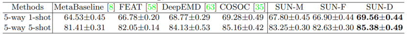
不同于以往的CNN-based方法，SUN在更长的训练中收益更多。
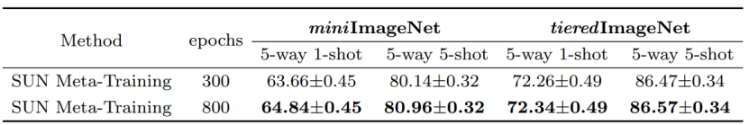
图像盲复原任务由于退化类型复杂且无法有效模拟，导致现有方法性能提升有限。而人脸图像由于具有极强的结构性先验，每个人都拥有相似的眼睛、鼻子、和嘴结构，但是每个人又同时具有自己独特的结构信息（例如瞳孔颜色等）。对于人脸图像的盲复原，由于皮肤区域大部分趋于平滑，因此人们更关注于面部五官的复原效果。基于此，提出基于双记忆网络的人脸图像盲复原方法。通过在训练过程中，记忆和存储通用的五官结构特征以及身份相关的特定五官结构特征，用来引导任意低质量人脸图像的通用复原和特定复原过程。
本文的贡献如下：
（1）与现有方法直接学习从低质量到高质量的复原映射不同，本文通过外部学习的高质量特征字典来促进人脸图像盲复原过程；
（2）为了在一个框架中处理低质量图像既有引导图又无引导图的情况，本文提出学习通用字典存储人五官相似的结构特征以及特定字典存储当前身份相关的结构特征。每个人共享通用字典，且独有身份相关的特定字典。
（3）为了结合双记忆字典，本文提出字典迁移模块，能够有效利用双字典的优势，并且当引导图不存在时，也能够有效对人脸图像复原。
下图为DMDNet的整体流程图以及双记忆字典读取模块。
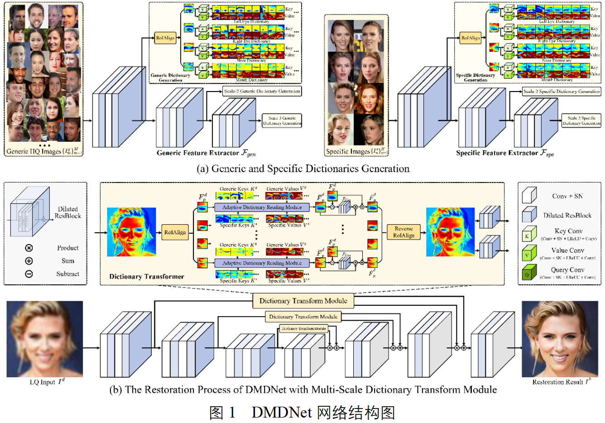
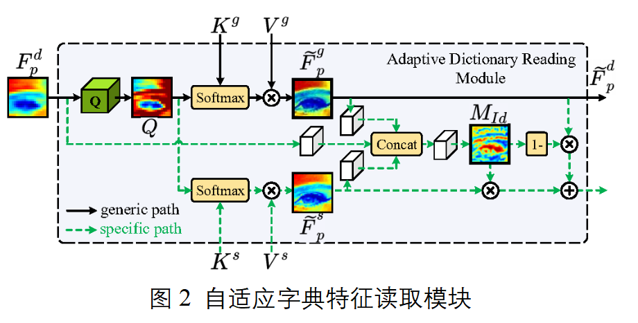
主要包含两个过程，1）字典构建过程：包含记忆任意身份的通用五官纹理的通用特征，以及身份相关的特定特征；2）引导复原过程：利用构建的字典，将记忆的特征引导任意低质量图像复原。当输入图像的引导图身份未知时，只利用通用特征即可进行复原。反之，若输入图像的身份已知并且具有多张高质量相同身份的人脸图像，通过网络提取身份相关的特定字典特征，结合通用字典特征，一同对其进行引导复原，在输入图像退化严重时，使得复原结果更像本人。
（a）字典的构建和优化过程为：
初始随机输入P张高质量通用人脸图像，对每一个通用特征字典构建P项通用字典项，每项通用字典项包含通用索引值和通用特征值；P为正整数；
对初始通用字典项前向更新：
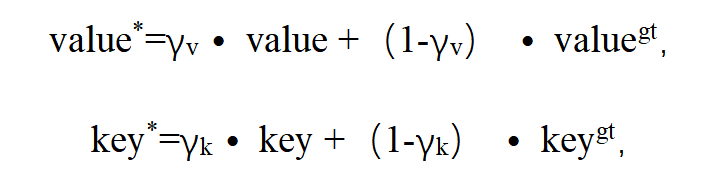
其中value*表示前向更新后的通用特征值，key*表示前向更新后的通用索引值；γv表示特征值可学习优化参数，γk表示索引值可学习优化参数，value表示已构建的通用特征值，key表示已构建的通用索引值，valuegt表示新输入高质量通用人脸图像的通用特征值，keygt表示新输入高质量通用人脸图像的通用索引值；
再对前向更新后通用字典项反向更新：
通过重建损失函数Lrec的梯度反向传播，对前向更新后通用字典项进一步优化，得到反向更新后最终通用字典项：
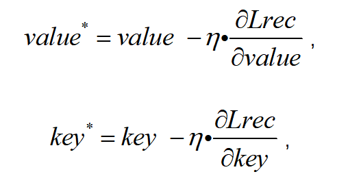
式中η表示学习率。
(b) 字典特征迁移模块
字典特征迁移模块获得遍历后字典特征的方法包括：
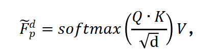
式中Fp为遍历后字典特征，Q为退化人脸部位特征的查询值，K为通用特征字典或特定特征字典的索引值，V为通用特征字典或特定特征字典的特征值，d表示常量。
此外设置置信度预测模块根据不同退化程度的输入对字典依赖程度不同，获得自适应融合特征的过程包括：
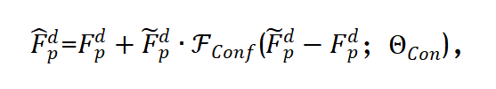
式中目标表示自适应融合特征，Fdp为退化人脸部位特征，Fconf为置信度预测网络，Θcon为置信度预测网络可学习参数；
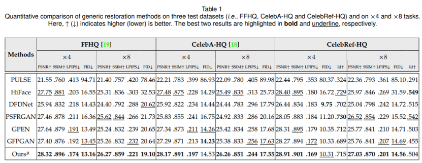
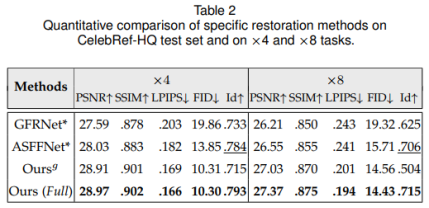
表1对比了本文通用复原方法（无同一人引导图）与现有方法比较结果，表2为特定复原方法（有同一人引导图）与现有方法对比结果。可以发现，只用通用字典的情况下，本文量化结果与其他对比方法均具有一定可比性，当引入同一人的特定字典时，从身份相关的量化结果看（Id项）复原效果会更接近本人。
下图为超分8倍的通用复原和特定复原效果对比。可以发现本文方法能够有效提升复原质量，当有引导图时，能够更好的保留与身份相关的特征（例如瞳孔颜色等）。
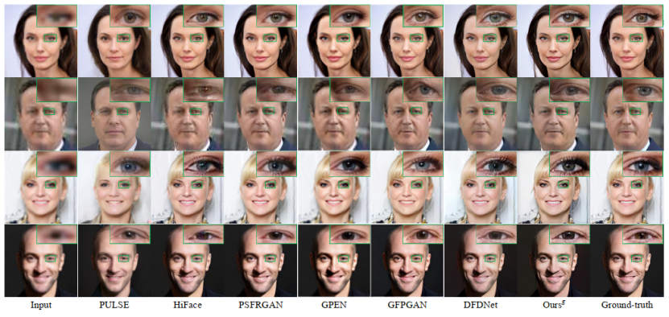
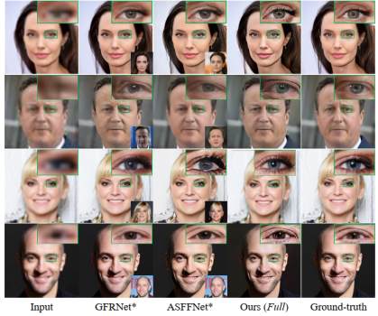